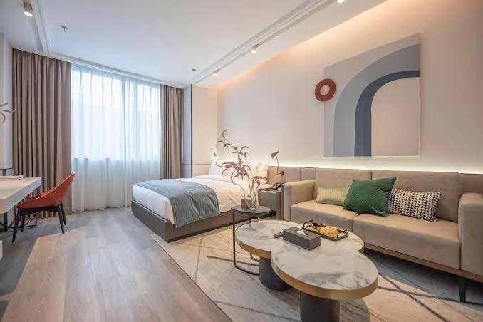

China Culinary Training · Itinerary Map
Plan B · 11 Days · Shanghai → Chengdu → Suzhou · Tap any stop for details & photos
1
2
3
4
5
6
7
8
9
10
11
12
13
14
15
16
17
18
19
20
21
22
23
Pre-arrival · Sat 2027-03-27
Arrival in Shanghai
Check in at Citadines; rest. Optional self-guided exploration.
Citadines Hongqiao Shanghai, 377 Songhong Road, Changning District — ~15 min walk to CieCAS.

×
+
−
Leaflet
|
© OpenStreetMap contributors
City
Shanghai
Chengdu
Suzhou
Tap to close